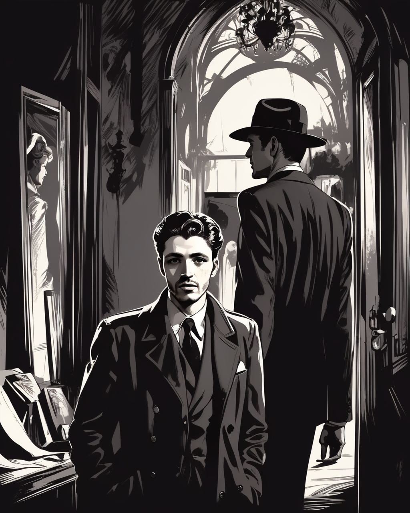
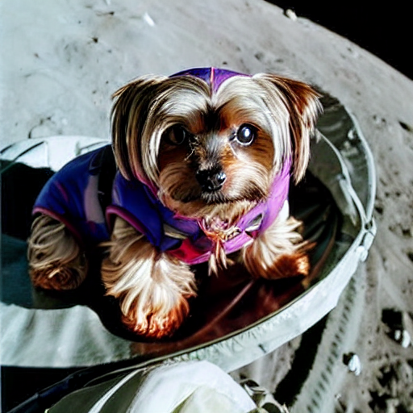

⸜( ˙˘˙)⸝ Thank you for visiting my personal website!
I'm currently a Data Scientist at RBC Capital Markets under the QTS Investment Banking Alternative Data and AI Team. I am also a Senior Data Quality Specialist at Cohere.
Outside of these roles I *endeavour* to contribute as much as possible to any open-source ML community events, libraries, and projects. I also sometimes make youtube videos and TikToks discussing anything ML related.
This website is a collection of some projects I really enjoyed working on and found interesting. I hope you find them interesting too!

Text2Sql
Fine-tuned an LLM on synthetic data to resolve natural language queries about an SQLite database by generating an SQL Query and interpreting the results.

Dreambella -- a Dreambooth fine-tuned diffusion model for my dog Bella
Fine-tuned a diffusion model with Dreambooth to output
DotaLLM
Trained a YOLO model for enemy detection and prompted an LLM to decide where to move and what to attack.